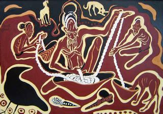
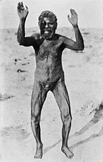

Kurdaitcha (or kurdaitcha man, and also spelled kurdaitcha, gadaidja, cadiche, kadaitcha, or karadji) is a type of shaman amongst the Arrernte people, an Aboriginal group in Central Australia. The kurdaitcha may be brought in to punish a guilty party by death. The word may also relate to the ritual in which the death is willed by the kurdaitcha man, known also as bone-pointing. The word may also be used by Europeans to refer to the shoes worn by the Kurdaitcha, which are woven of feathers and human hair and treated with blood.
Among traditional Indigenous Australians there is no such thing as a belief in natural death. All deaths are considered to be the result of evil spirits or spells, usually influenced by an enemy. Often, a dying person will whisper the name of the person they think caused their death. If the identity of the guilty person is not known, a "magic man" will watch for a sign, such as an animal burrow leading from the grave showing the direction of the home of the guilty party. This may take years but the identity is always eventually discovered. The elders of the mob that the deceased belonged to then hold a meeting to decide a suitable punishment. A Kurdaitcha may or may not be arranged to avenge them.
The expectation that death would result from having a bone pointed at a victim is not without foundation. Other similar rituals that cause death have been recorded around the world. Victims become listless and apathetic, usually refusing food or water with death often occurring within days of being "cursed". When victims survive, it is assumed that the ritual was faulty in its execution. The phenomenon is recognized as psychosomatic in that death is caused by an emotional response—often fear—to some suggested outside force and is known as "voodoo death". As this term refers to a specific religion, the medical establishment has suggested that "self-willed death", or "bone-pointing syndrome" is more appropriate.In Australia, the practice is still common enough that hospitals and nursing staff are trained to manage illness caused by "bad spirits" and bone pointing.